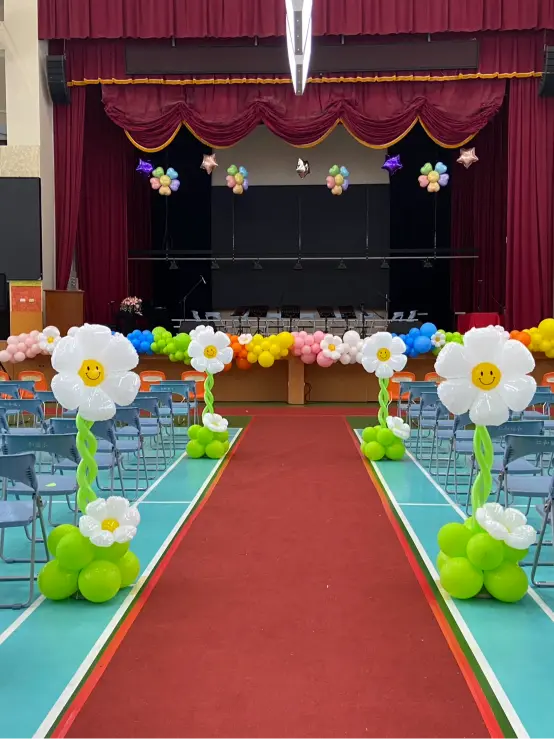

桃園仁和國小畢業佈置紀錄｜粉嫩拱門 × 笑臉花柱 × 儀式感紅毯
校園美學大升級｜在桃園大溪，為畢業生打造穿梭於愛與驚喜的幸福紅毯
📍 地點：桃園市大溪區 仁和國小
打造夢幻校園：粉嫩系拱門的幸福魔法
這場位於桃園大溪 仁和國小 的畢業典禮，是氣球大叔 Sony 結合「粉嫩氣球鏈」與「溫馨氛圍」的代表作。我們深知畢業對於孩子與家長的重要性，因此特別以粉紅、浪漫紫與純潔白為主色調，從校門口延伸至禮堂入口，打造了一條宛如童話場景的幸福隧道。

儀式感紅毯：笑臉花道引導未來之路
在佈置細節上，Sony 特別運用了大量的 笑臉造型花柱。這些花柱不僅突出了紅毯的動線設計，更在視覺上給予畢業生滿滿的正能量。當家長牽著穿上學士袍的孩子踏入會場時，快門聲此起彼落，每一張合影都見證了這場 桃園校園佈置 帶來的感動。
- 🌸 主題色彩： 延續校方主視覺，粉紫色系營造莊嚴又不失溫馨的氣氛。
- 🌼 空間立體感： 花柱高低錯落，豐富了走廊與舞台前的視覺層次。
- 📸 打卡高人氣： 畢業典禮當天超過百組親子合影，成為該屆最熱門的紀念景點。

「這是仁和國小近年來最有氣氛的一次佈置！家長們一進校園就驚嘆不已，孩子們也說自己好像變成了童話故事的主角。」
結語：專業桃園校園佈置與活動企劃
氣球大叔 Sony 擁有豐富的國中小、幼兒園畢業典禮服務經驗。我們擅長根據預算與空間特性，規劃出最具視覺張力且安全的氣球裝飾方案。如果您也想為孩子們策劃一場專屬、夢幻且充滿儀式感的典禮，歡迎提前預約洽詢。
💡 關於桃園畢業季校園佈置的常見問題
- Q: 在桃園地區預約國小畢業典禮氣球佈置，建議提前多久規劃？
- A: 每年六月是畢業季高峰期，桃園各國小與幼兒園的佈置需求非常集中。氣球大叔 Sony 建議校方或家委會至少提前 2 至 3 個月聯繫討論。提早預約不僅能確保熱門檔期，我們也能根據校園的場地特性（如仁和國小的紅毯走廊）進行精確的色彩搭配與設計，確保當天呈現最完美的視覺品質。
- Q: 校園氣球佈置如何應對戶外風力或天候影響？
- A: 針對校園入口或半戶外走道的佈置，氣球大叔 Sony 會特別強化支架底座與固定技術。我們使用的專業級氣球材質具備更強韌的延展性與色彩飽和度，即便是大溪這類通風較好的校區，我們也能確保氣球拱門與笑臉花柱保持挺拔美觀。若是極端氣候，我們也會備有備選的室內轉場方案供校方參考，確保活動順利執行。
- Q: 除了氣球拱門與走道佈置，氣球大叔還能提供哪些畢業典禮服務？
- A: 我們提供全方位的校園慶典解決方案。除了靜態的氣球美學佈置，Sony 老師也常受邀在畢業晚會或餐敘中進行「氣球魔術互動演出」。此外，我們也能客製化畢業禮物氣球、大型主題背板製作或是氣球爆破特效，一站式地解決校慶或畢業季的所有感官體驗需求，提升整體典禮的質感與儀式感。
🎈 正在尋找桃園畢業季校園佈置嗎？
如果您也希望為您的活動創造像現場一樣爆棚的人氣與驚喜，氣球大叔 Sony 是您的首選！我們專注於提供高品質的互動演出與情境佈置：
- 校園大型佈置：畢業典禮氣球拱門、笑臉花道設計、校慶舞台造勢。
- 品牌校園行銷：新品發表會、入學慶典、家長委員會活動視覺。
- 畢業驚喜演出：魔術互動秀、精緻造型氣球發送、畢業生驚喜揭幕儀式。
📅 本文整理於 2025 年 06 月 10 日，完整紀錄真實活動現場氛圍。